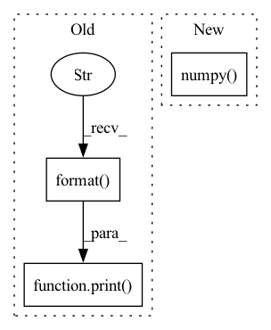

Pattern ID :24130
Before Change
with open(path, "rb") as audio_file:
wave, sr = sf.read(audio_file)
except RuntimeError:
print( "Could not read {}".format( path))
continue
if min_len <= len(wave) / sr <= max_len:
norm_wave = ap.audio_to_wave_tensor(audio=wave, normalize=True, mulaw=False)
norm_wave_length = torch.LongTensor([len(norm_wave)])After Change
cached_speech_len.numpy(),
cached_duration.cpu().numpy(),
cached_energy.cpu().numpy(),
cached_pitch.cpu().numpy() ,
cached_speaker_embedding.detach().cpu().numpy()])
self.datapoints += process_internal_dataset_chunk
In pattern: SUPERPATTERN
Frequency: 4
Non-data size: 3
Instances Fragment ID: 74840308
Project Name: digitalphonetics/ims-toucan
Commit Name: 435d8aac1d0d8fd6534e6c64454c1a665ddf8f77
Time: 2021-09-05
Author: florian.lux@ims.uni-stuttgart.de
File Name: TrainingInterfaces/Text_to_Spectrogram/FastSpeech2/FastSpeechDataset.py
M Class Name: FastSpeechDataset
N Class Name: FastSpeechDataset
M Method Name: cache_builder_process(11)
N Method Name: cache_builder_process(11)
M Parent Class: Dataset
N Parent Class: Dataset
M File Name: TrainingInterfaces/Text_to_Spectrogram/FastSpeech2/FastSpeechDataset.py
N File Name: TrainingInterfaces/Text_to_Spectrogram/FastSpeech2/FastSpeechDataset.py
M Start Line: 82
M End Line: 158
N Start Line: 107
N End Line: 178
Before Change
with open(path, "rb") as audio_file:
wave, sr = sf.read(audio_file)
except RuntimeError:
print( "Could not read {}".format( path))
continue
if min_len <= len(wave) / sr <= max_len:
cached_text = tf.string_to_tensor(transcript).squeeze(0).cpu()
cached_text_len = torch.LongTensor([len(cached_text)])After Change
mel_tensor = wav2mel(wav_tensor, sample_rate)
emb_tensor = dvector.embed_utterance(mel_tensor)
cached_speaker_embedding = emb_tensor.detach().cpu()
process_internal_dataset_chunk.append([cached_text.numpy() ,
cached_text_len.numpy(),
cached_speech.numpy(),
cached_speech_len.numpy(), Fragment ID: 74840305
Project Name: digitalphonetics/ims-toucan
Commit Name: 435d8aac1d0d8fd6534e6c64454c1a665ddf8f77
Time: 2021-09-05
Author: florian.lux@ims.uni-stuttgart.de
File Name: TrainingInterfaces/Text_to_Spectrogram/Tacotron2/TacotronDataset.py
M Class Name: TacotronDataset
N Class Name: TacotronDataset
M Method Name: cache_builder_process(7)
N Method Name: cache_builder_process(7)
M Parent Class: Dataset
N Parent Class: Dataset
M File Name: TrainingInterfaces/Text_to_Spectrogram/Tacotron2/TacotronDataset.py
N File Name: TrainingInterfaces/Text_to_Spectrogram/Tacotron2/TacotronDataset.py
M Start Line: 64
M End Line: 84
N Start Line: 83
N End Line: 105
Before Change
vis=os.path.join(cache_dir, "durations_visualization",
str(int(focus_rate * 10000)) + "_" + path.split("/")[-1].rstrip(".wav") + ".png"))[0].cpu()
if np.count_nonzero(cached_duration.numpy() == 0) > 5:
print( "exclude file {} because it has too many zero duration frames".format( path))
continue
else:
wav_tensor, sample_rate = torchaudio.load(path)
mel_tensor = wav2mel(wav_tensor, sample_rate)After Change
use_att_constraint=True)[2]
cached_duration = dc(attention_map, vis=os.path.join(cache_dir, "durations_visualization",
path.split("/")[-1].rstrip(".wav") + ".png"))[0].cpu()
if np.count_nonzero(cached_duration.numpy() == 0) > 4:
continue
cached_energy = energy_calc(input=norm_wave.unsqueeze(0),
input_lengths=norm_wave_length, Fragment ID: 74840297
Project Name: digitalphonetics/ims-toucan
Commit Name: efd63af066258a09362aa9896e7a58c38edef5f2
Time: 2021-09-05
Author: florian.lux@ims.uni-stuttgart.de
File Name: TrainingInterfaces/Text_to_Spectrogram/FastSpeech2/FastSpeechDataset.py
M Class Name: FastSpeechDataset
N Class Name: FastSpeechDataset
M Method Name: cache_builder_process(11)
N Method Name: cache_builder_process(11)
M Parent Class: Dataset
N Parent Class: Dataset
M File Name: TrainingInterfaces/Text_to_Spectrogram/FastSpeech2/FastSpeechDataset.py
N File Name: TrainingInterfaces/Text_to_Spectrogram/FastSpeech2/FastSpeechDataset.py
M Start Line: 124
M End Line: 167
N Start Line: 157
N End Line: 159
Before Change
fastraster_time_gpu = time.time() - tic
print("Runtimes:")
print(
"Fast Marching: {:.6f} s \nGeodisTk raster: {:.6f} s \nFastGeodis CPU raster: {:.6f} s".format(
fastmarch_time, geodistkraster_time, fastraster_time_cpu
)
)
if device:
print("FastGeodis GPU raster: {:.6f} s".format(fastraster_time_gpu))
After Change
tic = time.time()
toivanenraster_output = np.squeeze(
FastGeodis.generalised_geodesic2d_toivanen(input_image_pt, seed_image_pt, v, lamb, iterations).cpu().numpy()
)
toivanenraster_time = time.time() - tic
tic = time.time() Fragment ID: 74840283
Project Name: masadcv/fastgeodis
Commit Name: a1906e989649c1f0b8fdbed147c1d576ac5c41f3
Time: 2022-07-22
Author: muhammad.asad@kcl.ac.uk
File Name: samples/demo2d.py
M Class Name: AnonimousClass
N Class Name: AnonimousClass
M Method Name: evaluate_geodesic_distance2d(2)
N Method Name: evaluate_geodesic_distance2d(2)
M Parent Class:
N Parent Class:
M File Name: samples/demo2d.py
N File Name: samples/demo2d.py
M Start Line: 29
M End Line: 158
N Start Line: 18
N End Line: 100